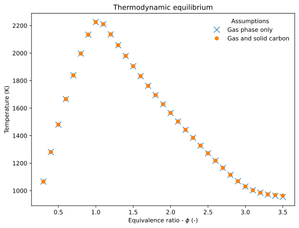

Equilibrium Example¶
This example uses ctwrap for equilibrium calculations defined by the simulation module equilibrium (ctwrap.modules.equilibrium).
Function/Class Definitions¶
[1]:
import matplotlib.pyplot as plt
import matplotlib as mpl
import pandas as pd
col = mpl.rcParams['axes.prop_cycle'].by_key()['color']
[2]:
import ctwrap as cw
cw.__version__
[2]:
'0.3.1'
Simulations¶
Uses a module in the modules folder. Modules do not have to depend on ctwrap.
[3]:
sim = cw.Simulation.from_module(cw.modules.equilibrium)
sim
[3]:
<ctwrap.wrapper.Equilibrium at 0x7f8aa8ba9b10>
Single Phase¶
Use YAML configuration defining a single phase
[4]:
# create variation object
fname = '../../yaml/equilibrium.yaml'
sh_single = cw.SimulationHandler.from_yaml(fname, verbosity=1)
sh_single
Simulations for entry `initial.phi` with values: [0.3, 0.4, 0.5, 0.6, 0.7, 0.8,
0.9, 1.0, 1.1, 1.2, 1.3, 1.4, 1.5, 1.6, 1.7, 1.8, 1.9, 2.0, 2.1, 2.2, 2.3, 2.4,
2.5, 2.6, 2.7, 2.8, 2.9, 3.0, 3.1, 3.2, 3.3, 3.4, 3.5]
[4]:
<ctwrap.handler.SimulationHandler at 0x7f8aaa481890>
[5]:
%%time
# Run parallel simulation
sh_single.run_parallel(sim)
* Starting parallel batch simulation using 1 cores
* running `case_00` (Process-1)
Tad = 1066.25
* running `case_01` (Process-1)
Tad = 1280.77
* running `case_02` (Process-1)
Tad = 1480.18
* running `case_03` (Process-1)
Tad = 1665.95
* running `case_04` (Process-1)
Tad = 1838.62
* running `case_05` (Process-1)
Tad = 1996.89
* running `case_06` (Process-1)
Tad = 2134.24
* running `case_07` (Process-1)
Tad = 2225.52
* running `case_08` (Process-1)
Tad = 2210.38
* running `case_09` (Process-1)
Tad = 2136.52
* running `case_10` (Process-1)
Tad = 2057.30
* running `case_11` (Process-1)
Tad = 1979.78
* running `case_12` (Process-1)
Tad = 1904.80
* running `case_13` (Process-1)
Tad = 1832.34
* running `case_14` (Process-1)
Tad = 1762.27
* running `case_15` (Process-1)
Tad = 1694.42
* running `case_16` (Process-1)
Tad = 1628.67
* running `case_17` (Process-1)
Tad = 1564.89
* running `case_18` (Process-1)
Tad = 1502.98
* running `case_19` (Process-1)
Tad = 1442.83
* running `case_20` (Process-1)
Tad = 1384.35
* running `case_21` (Process-1)
Tad = 1327.46
* running `case_22` (Process-1)
Tad = 1272.09
* running `case_23` (Process-1)
Tad = 1218.20
* running `case_24` (Process-1)
Tad = 1165.83
* running `case_25` (Process-1)
Tad = 1115.42
* running `case_26` (Process-1)
Tad = 1068.79
* running `case_27` (Process-1)
Tad = 1030.42
* running `case_28` (Process-1)
Tad = 1003.44
* running `case_29` (Process-1)
Tad = 985.30
* running `case_30` (Process-1)
Tad = 972.42
* running `case_31` (Process-1)
Tad = 962.61
* running `case_32` (Process-1)
Tad = 954.72
CPU times: user 42.6 ms, sys: 34.1 ms, total: 76.8 ms
Wall time: 3.52 s
[5]:
True
[6]:
sh_single.output_name
[6]:
PosixPath('../../yaml/equilibrium.csv')
Multiple Phases¶
Use YAML configuration defining two phases (gas and graphite)
[7]:
# create variation object
fname = '../../yaml/equilibrium_multi.yaml'
sh_multi = cw.SimulationHandler.from_yaml(fname, verbosity=1)
sh_multi
Simulations for entry `initial.phi` with values: [0.3, 0.4, 0.5, 0.6, 0.7, 0.8,
0.9, 1.0, 1.1, 1.2, 1.3, 1.4, 1.5, 1.6, 1.7, 1.8, 1.9, 2.0, 2.1, 2.2, 2.3, 2.4,
2.5, 2.6, 2.7, 2.8, 2.9, 3.0, 3.1, 3.2, 3.3, 3.4, 3.5]
[7]:
<ctwrap.handler.SimulationHandler at 0x7f8aa8b5f950>
[8]:
%%time
# Run parallel simulation
sh_multi.run_parallel(sim)
* Starting parallel batch simulation using 1 cores
* running `case_00` (Process-2)
Tad = 1066.25
* running `case_01` (Process-2)
Tad = 1280.77
* running `case_02` (Process-2)
Tad = 1480.18
* running `case_03` (Process-2)
Tad = 1665.95
* running `case_04` (Process-2)
Tad = 1838.62
* running `case_05` (Process-2)
Tad = 1996.89
* running `case_06` (Process-2)
Tad = 2134.24
* running `case_07` (Process-2)
Tad = 2225.52
* running `case_08` (Process-2)
Tad = 2210.38
* running `case_09` (Process-2)
Tad = 2136.52
* running `case_10` (Process-2)
Tad = 2057.30
* running `case_11` (Process-2)
Tad = 1979.78
* running `case_12` (Process-2)
Tad = 1904.80
* running `case_13` (Process-2)
Tad = 1832.34
* running `case_14` (Process-2)
Tad = 1762.27
* running `case_15` (Process-2)
Tad = 1694.42
* running `case_16` (Process-2)
Tad = 1628.67
* running `case_17` (Process-2)
Tad = 1564.89
* running `case_18` (Process-2)
Tad = 1502.98
* running `case_19` (Process-2)
Tad = 1442.83
* running `case_20` (Process-2)
Tad = 1384.35
* running `case_21` (Process-2)
Tad = 1327.46
* running `case_22` (Process-2)
Tad = 1272.09
* running `case_23` (Process-2)
Tad = 1218.20
* running `case_24` (Process-2)
Tad = 1165.83
* running `case_25` (Process-2)
Tad = 1115.42
* running `case_26` (Process-2)
Tad = 1068.79
* running `case_27` (Process-2)
Tad = 1030.42
* running `case_28` (Process-2)
Tad = 1003.44
* running `case_29` (Process-2)
Tad = 985.30
* running `case_30` (Process-2)
Tad = 973.13
* running `case_31` (Process-2)
Tad = 968.47
* running `case_32` (Process-2)
Tad = 963.98
CPU times: user 59.3 ms, sys: 20.8 ms, total: 80.1 ms
Wall time: 4.82 s
[8]:
True
[9]:
sh_multi.output_name
[9]:
PosixPath('../../yaml/equilibrium_multi.csv')
Create graphical output¶
Load data from files¶
[10]:
df_single = pd.read_csv(sh_single.output_name)
df_single
df_multi = pd.read_csv(sh_multi.output_name)
Generate Plot¶
Display adiabatic equilibrium temperature as function of equivalence ratio.
[11]:
# create figure and adjust size
fig, ax = plt.subplots(1)
fig.set_size_inches(8.,6.)
ax.plot(df_single.initial_phi.values, df_single['T'].values, 'x', markersize=10, label='Gas phase only')
ax.plot(df_multi.initial_phi.values, df_multi['T'].values, 'o', label='Gas and solid carbon')
# add title/axis labels
ax.set_title(r'Thermodynamic equilibrium')
ax.set_xlabel(r'Equivalence ratio - $\phi$ (-)')
ax.set_ylabel('Temperature (K)')
# add legend
leg = ax.legend(loc='upper right', title='Assumptions')
leg.draw_frame(False)

[ ]: